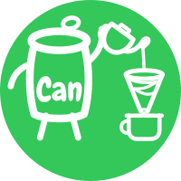
A notebook for the coffee you brew.
Log the pour, the grind and the time. Watch your taste take shape over months. Keep the cafés worth going back to. All of it on your phone, none of it on ours.
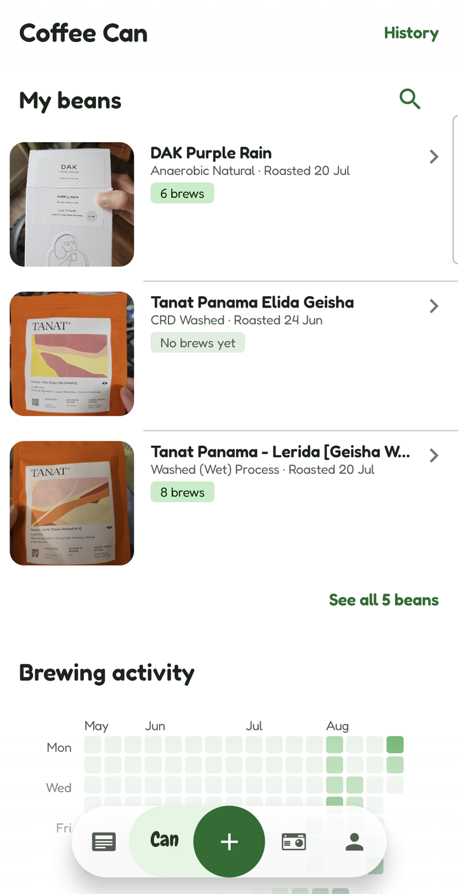
Every bag
Scan the bag. Keep the shelf.
Point the camera at a label and the fields fill themselves — origin, variety, altitude, roaster, producer, process, roast date. Nothing is saved until you have checked it, and anything the scan got wrong is one tap from corrected.
The photo of the bag stays on as the bean's hero image, so the shelf is recognisable at a glance.
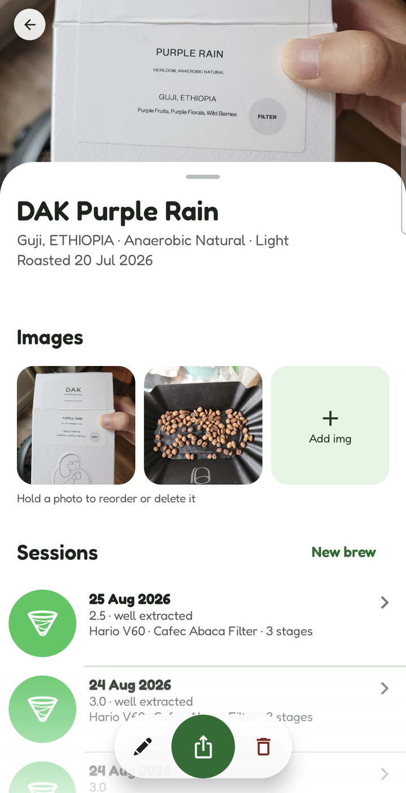
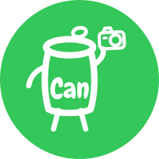
Every cup
Every pour, in order.
A brewing session is the whole recipe, not a star rating. Dripper, grinder, grind size, filter, dose, water, alkalinity and ppm — then pour stages: how much water went in, at what temperature, at what point on the clock, and what you were doing (bloom, swirl gently).
The next brew of the same bag opens pre-filled from the last one, so only the thing you are changing has to be typed. Never the result, though — the score and the tasting axes start empty every time.
Brewing out of the house instead? Log it as a cup, attached to the café: the grind-and-pour half of the form gets out of the way and a barista box takes its place, because that is the one brewing detail somebody else's coffee comes with. Or start with vibe brewing: brew now, name the bean later.
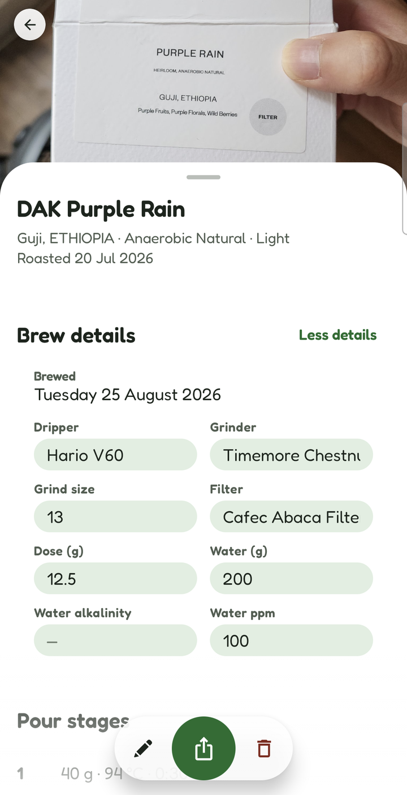
After the cup
Was it any good?
A score out of five, and then the two numbers that actually diagnose a brew: extraction from under to over, and concentration from too weak to too strong. They sit one above the other because a cup can be fully extracted and watery, or under-extracted and syrupy, and one number cannot say both.
Then eleven flavour axes — fruity, floral, tea-like, sweet, nutty, spiced, roasted, cereal, green, sour, fermented — and the radar redraws as you drag. Tap an axis to zoom into it and pick up to five tasting notes from the ten offered for that flavour.
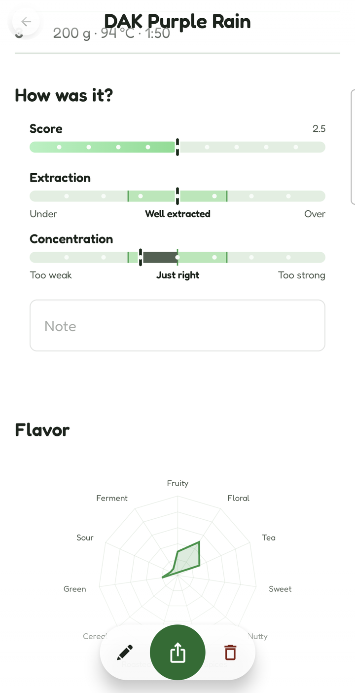
Over months
Your palate, drawn.
Leave a bean on auto and its radar is the average of its own sessions, so your taste draws its own picture as you brew. Set it by hand instead and it stays exactly where you put it.
Home carries the same chart for everything you have ever brewed, above a year of brewing activity — a day per square, darker the more you poured.
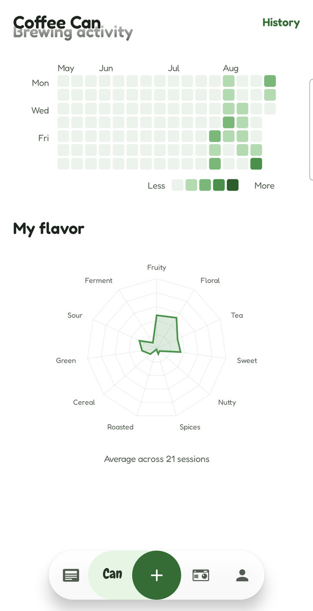
The log
Everything you've brewed.
Every session across every bean, newest first, with the dripper's own glyph, the score, the extraction verdict and how many pours it took. A cup drunk out is green and names its café, so it never blurs into the ones you made at home.
A bean's own page carries the same rows for just that bag — the same card, so a brew looks like one thing wherever you reach it from.
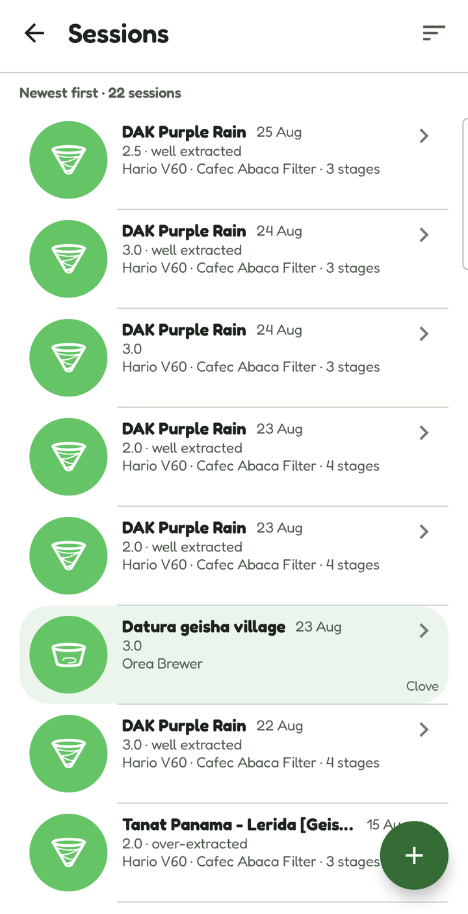
Can travel
The cafés you'd go back to.
A Polaroid for every place, with the city and the day you were there, and a note while it is still fresh. Open one and you get the address, up to three photographs, and every cup you drank there.
Open a cup and it is a brewing session with the café behind it — the coffee, how it tasted, and who handed it to you. A café has many baristas, so the name belongs to the cup, not to the building.
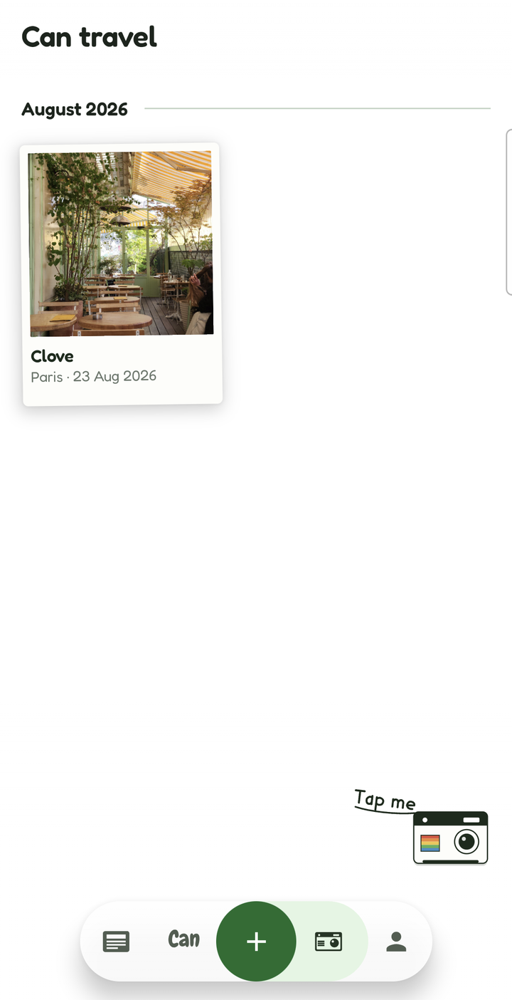
Can read
Coffee news, on paper.
Headlines from the trade press, set as newsprint. Source, date and the story's own opening line — then a tap through to the publisher, because the article is theirs to serve.
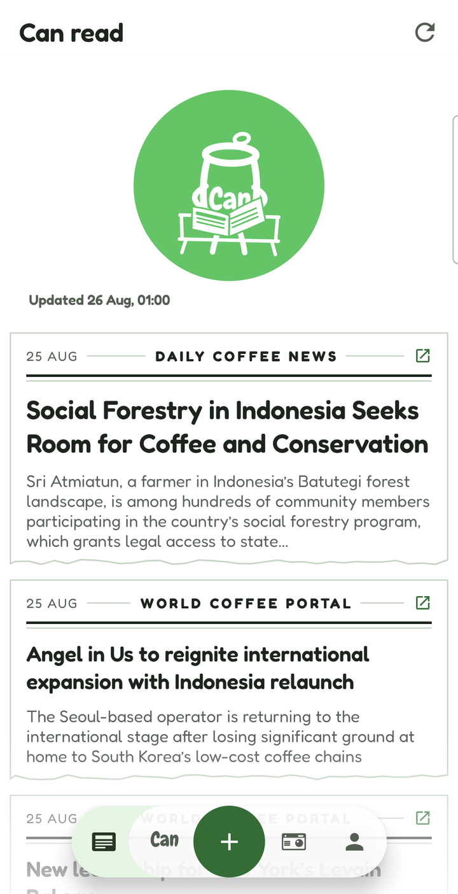
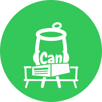
And the rest of it
The parts that don't need a screenshot.
A shelf you can search
Three bags on the front page and the rest one tap away. Search by name, roaster or origin.
Brew first, name it later
Vibe brewing starts a session with no bean at all; you name the coffee from inside the form whenever you get round to it.
Ask AI, if you want to
Send a bean's details and get a recipe back to accept or ignore. It asks first, every single time, and each AI feature is consented to on its own — never once, globally.
Three languages
English, French and 简体中文, switchable inside the app rather than only with the phone's own setting.
Sync with desktop
Send your log to a computer, or receive one, as a file you carry yourself. Importing never overwrites — new beans are added, ones already here are left alone and counted.
Works in aeroplane mode
Everything except label scanning, brew suggestions and the news runs with no connection at all.
Charts that talk
The radar, the extraction bar and the activity calendar are drawn, not laid out — so each ships a spoken summary for screen readers, and every axis is reachable as a button.
Your account, your call
Read what the server holds on you, or delete the account outright, from inside the app or from this site. Deleting unlinks Google; your log stays on the phone.
Your log stays on your phone.
Beans, brews, notes and photos live in a database on your device. We do not have a copy. Moving your log to a computer is a file you carry yourself — not an upload.
Signing in is optional, and only unlocks the AI features. When it is used, the server keeps an identifier and a counter so the feature can be metered — and nothing you wrote.